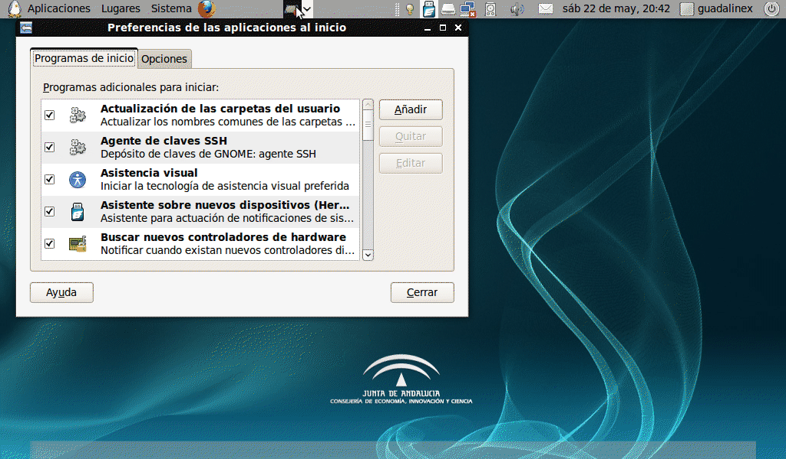

Normalmente hay programas o aplicaciones que usas a diario y que además los mantienes abiertos mientras dura tu sesión (navegador Firefox, correo electrónico, mensajería instantánea, Evolution, etc…). Cada vez que enciendes tu ordenador debes entrar uno por uno en dichos programas, por eso vamos a enseñarte una opción para que cuando arranque tu equipo dichos programas o aplicaciones se abran automáticamente sin que tengas que abrirlos manualmente en cada sesión. Como ves, es una opción muy práctica que te ahorra tiempo y que además evita despistes y olvidos.
En primer lugar, colócate con el ratón en el panel superior del escritorio y accede al menú Sistema→Preferencias→Aplicaciones al inicio.
En la ventana que se te abre de nombre Preferencias de las aplicaciones al inicio, haz clic en el botón Añadir de la parte de la derecha.
Se abrirá otra ventana encima de la anterior, donde debes especificar el nombre del programa o aplicación que quieres que se abra al inicio de tu sesión, y además, el comando que representa a dicho programa.
Pero si no sabes cual es ese comando, ahora vamos a explicarte como averiguarlo. En el caso de que quieras añadir al inicio de sesión un programa que esté contenido en el menú Aplicaciones:
Haz clic con el botón derecho del ratón encima del menú Aplicaciones y escoge la opción Editar los menús del menú desplegable.
Busca el programa o aplicación que te interese y haz doble clic sobre él. En la ventana que se te abre podrás comprobar cual es el comando que corresponde a dicho programa.
Una vez que ya sabes el comando, vuelve a la ventana de Preferencias de las aplicaciones al inicio y rellena los datos relativos al nombre del programa y comando.
Para finalizar, haz clic en el botón Añadir de la ventana Añadir programa al inicio.

Anterior: Edito el menu de arranque
Siguiente: Añado usuarios a la pantalla de acceso al sistema
{kind=link}